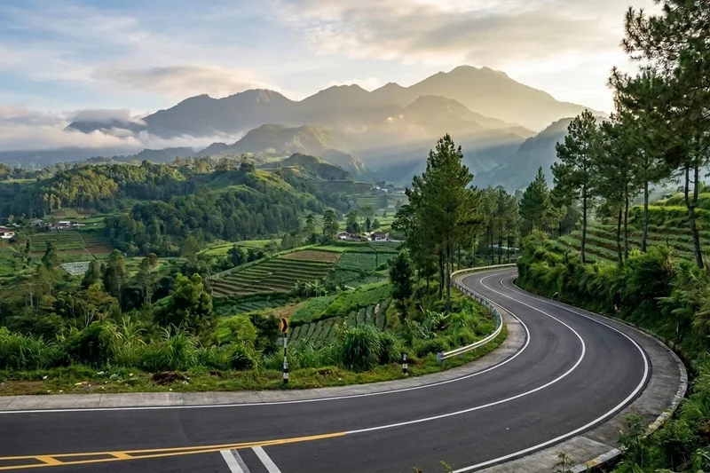

Rute ke Coban Rais ditempuh sekitar 15-20 menit dari pusat Kota Batu dengan kendaraan pribadi menuju Dusun Dresel, Desa Oro-Oro Ombo.
Ringkasan Inti
- Coban Rais berlokasi di Dusun Dresel, Desa Oro-Oro Ombo, Kota Batu (Indonesia Travel, 2026).
- Waktu tempuh sekitar 15-20 menit dari pusat Kota Batu dengan kendaraan pribadi.
- Pengunjung dari Malang dan Surabaya perlu menuju Kota Batu terlebih dahulu.
- Parkir tersedia dengan tarif yang dicatat Orami pada Juli 2024: Rp5.000 motor dan Rp10.000 mobil.
- Waktu tempuh dapat bertambah pada akhir pekan dan musim liburan.
Di Mana Lokasi dan Alamat Coban Rais?
Coban Rais terletak di Dusun Dresel, Desa Oro-Oro Ombo, Kecamatan Batu, Kota Batu, Jawa Timur, bagian dari kawasan wisata Malang Raya.
Indonesia Travel menyebut lokasi tepat ini pada halaman destinasi Air Terjun Coban Rais. Sebagian pengelola penginapan di kawasan ini mencantumkan alamat sekitar Jalur Lingkar Barat, Oro-Oro Ombo, Batu, dengan kode pos 65316.
Karena beberapa pengelola camping berada di area yang sama, gunakan nama pengelola yang dipesan sebagai kata kunci tujuan di aplikasi peta, bukan hanya “Coban Rais”. Cara ini mengurangi risiko salah titik.
Berapa Lama Perjalanan dari Pusat Kota Batu?
Perjalanan dari pusat Kota Batu ke Coban Rais memakan waktu sekitar 15-20 menit dengan kendaraan pribadi, menurut halaman destinasi Indonesia Travel.
Waktu ini adalah perkiraan pada kondisi lalu lintas normal. Pada hari Sabtu, Minggu, dan libur panjang, jalan di Kota Batu dapat padat. Sebaiknya tambahkan waktu cadangan agar tidak tiba terlalu sore.
Perhitungan ini berlaku untuk titik awal di pusat Kota Batu. Jika pengunjung berangkat dari kota lain, tambahkan waktu menuju Batu terlebih dahulu.
Bagaimana Rute dari Kota Malang?
Dari Kota Malang, pengunjung biasanya menuju Kota Batu lebih dulu, lalu mengikuti petunjuk arah ke Oro-Oro Ombo dan kawasan Coban Rais.
Waktu tempuh dari Kota Malang ke Batu dapat bervariasi tergantung titik awal dan kepadatan jalan. Gunakan aplikasi peta untuk mendapatkan estimasi pada jam keberangkatan Anda.
Setelah memasuki Kota Batu, ikuti papan petunjuk ke kawasan wisata Coban Rais. Jalan di beberapa bagian menanjak dan berkelok, jadi kendaraan harus dalam kondisi baik, terutama rem dan ban.
Bagaimana Rute dari Surabaya dan Luar Kota?
Dari Surabaya dan kota lain, pengunjung umumnya menuju Malang Raya melalui jalur tol dan jalan utama, kemudian melanjutkan ke Kota Batu dan Coban Rais.
Durasi perjalanan dari kota asal bergantung pada kendaraan, kondisi tol, dan lalu lintas. Karena itu, panduan ini tidak menetapkan angka pasti. Gunakan estimasi aplikasi peta pada hari keberangkatan.
Pengunjung yang datang dengan kereta atau pesawat biasanya melanjutkan perjalanan dengan taksi, kendaraan sewaan, atau layanan transportasi daring menuju Kota Batu. Pastikan pengemudi memahami lokasi Oro-Oro Ombo agar tidak berhenti di titik yang jauh dari area kemah.
Kendaraan Apa yang Cocok Menuju Coban Rais?
Kendaraan pribadi seperti mobil dan motor paling fleksibel menuju Coban Rais, sedangkan angkutan umum dan layanan daring lebih terbatas untuk rute terakhir.
Mobil cocok untuk keluarga yang membawa banyak perlengkapan. Motor lebih lincah di jalan sempit, tetapi tidak ideal pada saat hujan deras dan membawa tas besar.
Pengunjung yang tidak membawa kendaraan sendiri perlu memastikan cara kembali dari kawasan. Ketersediaan layanan daring di area perbukitan dapat berbeda dari pusat kota, terutama pada malam hari.
Bagaimana Kondisi Parkir dan Akses Terakhir?
Kawasan Coban Rais memiliki area parkir dengan tarif yang dicatat Orami pada Juli 2024 sebesar Rp5.000 untuk motor dan Rp10.000 untuk mobil.
Setelah parkir, akses menuju titik tertentu dapat ditempuh dengan jalan kaki atau ojek. Orami mencatat ojek menuju Batu Flower Garden Rp10.000 pada periode yang sama. Tarif ini dapat berubah.
Jika Anda menginap di area glamping atau camping ground tertentu, tanyakan apakah kendaraan boleh masuk sampai dekat tenda atau harus diparkir di area utama. Informasi ini penting bila membawa barang berat.
Apa Tips Keselamatan Saat Menuju Coban Rais?
Tips keselamatan menuju Coban Rais meliputi mengecek kondisi kendaraan, berangkat sebelum gelap, memantau cuaca, dan menyimpan nomor kontak pengelola sebelum tiba.
Berikut daftar singkat yang bisa diterapkan:
- Isi bahan bakar penuh sebelum naik ke area perbukitan.
- Gunakan gigi rendah saat menurun agar rem tidak terlalu panas.
- Hindari berkendara saat hujan deras dan kabut tebal.
- Unduh peta offline karena sinyal dapat berubah di sekitar hutan.
- Simpan nomor pengelola untuk kebutuhan darurat atau penjemputan.